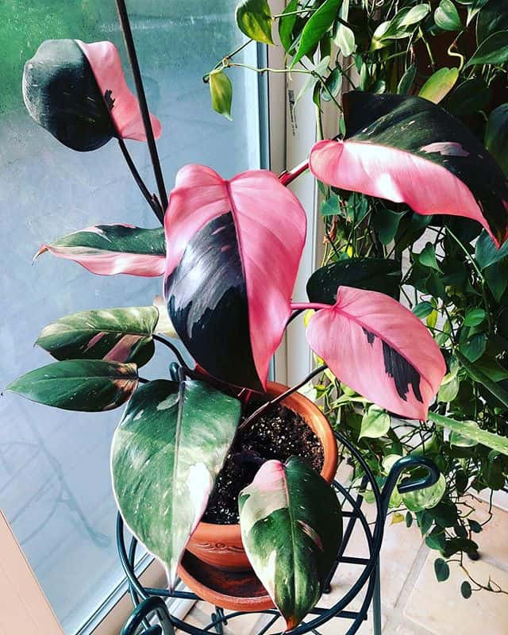
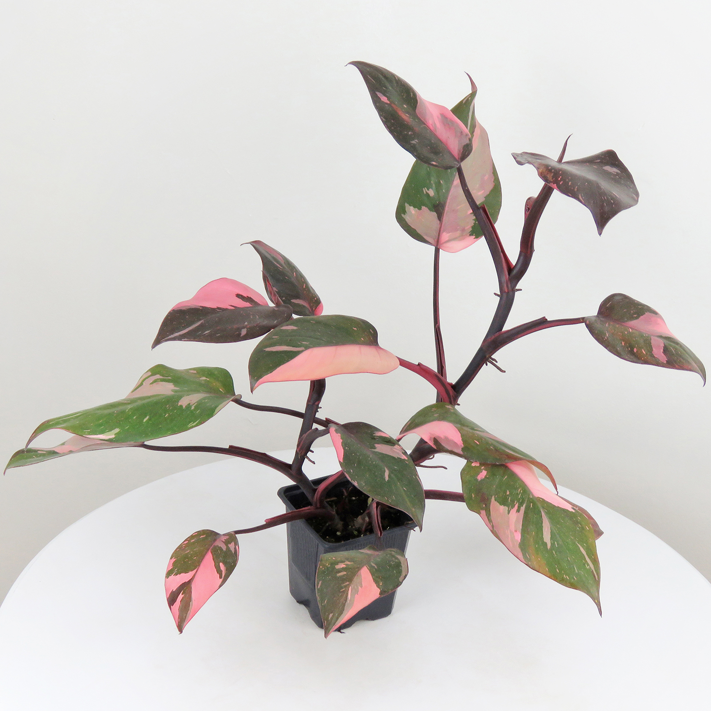
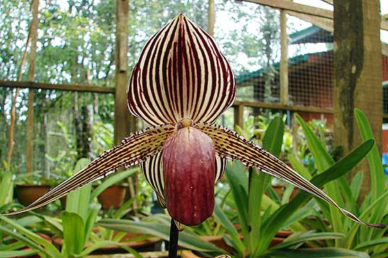

rare houseplants
pink princess philodendron
The Pink Princess Philodendron is an evergreen vining plant from the Araceae family (the aroids) that can grow up to 4 feet tall, but usually stays around 2 feet when kept as a potted plant. It has burgundy stems andpetioles abd aerial roots that emerge from nodes.
shenzhen nongke orchid
The Shenzhen Nongke Orchid is a completely man‐made flower that was developed during 8 years of research in agricultural science by its namesake Shenzhen Nongke Group in China. In 2006 the flower was sold at auction to an anonymous bidder for a a jaw dropping 1.68 million Yuan, or £160,000.


